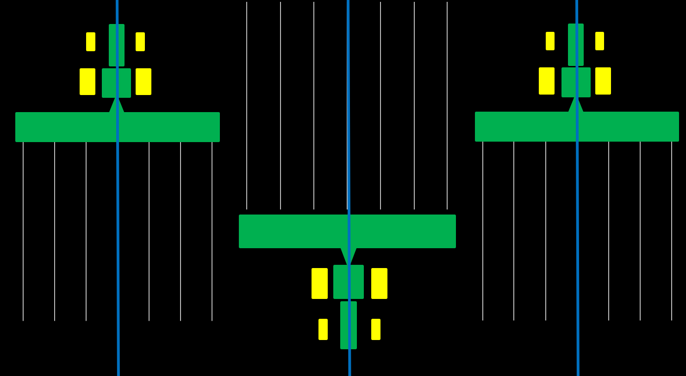

MÓDULOS DE CALIBRACIÓN
🌱
John Deere · Siembra
Corrección de Valor C y ancho de apero
›
🚜
Case IHPróximamente
Calibración de siembra
🚜
New HollandPróximamente
Calibración de siembra
🛰️
Trimble · Guiado
Diagnóstico de precisión entre pasadas
›
SOBRE LA APP
AG PILOT CAL es una herramienta desarrollada para asistir a técnicos y operadores durante la calibración de sistemas de guiado agrícola en operaciones de siembra. Elegí la marca de tu piloto, cargá las mediciones tomadas en el surco y obtené al instante el diagnóstico y la corrección exacta a aplicar.
REFERENCIA VISUAL
Utilizá esta referencia para validar visualmente las mediciones utilizadas durante el proceso de calibración.
